| session_completed | n |
|---|---|
| post | 22 |
| pre | 24 |
| pre & post | 57 |
Sci-Expo Survey 2025-2026
1 Demographics
In total, we collected responses from 34 students, with 47 from historically under-represented minorities (HURM) and 34 not from historically under-represented minorities (Non-HURM). Note that we do not have this information for 22 students because they only completed the post-test survey, and we only asked this information in the pre-test survey.
The number of participants who completed each survey is as follows:
Detailed table of the number of participants who completed each survey, attended which sciexpo, and depending on their minority status:
| attend_sciexpo_this_year | session_completed | attend_sciexpo_last_year | under_represented | n | included_in_baseline | included_in_prepost |
|---|---|---|---|---|---|---|
| Attended This Year | Pre & Post | Did NOT Attend Last Year | Non-HURM | 12 | In Baseline | In Prepost |
| Attended This Year | Pre & Post | Did NOT Attend Last Year | HURM | 8 | In Baseline | In Prepost |
| Attended This Year | Pre & Post | Attended Last Year | Non-HURM | 10 | In Baseline | In Prepost |
| Attended This Year | Pre & Post | Attended Last Year | HURM | 19 | In Baseline | In Prepost |
| Attended This Year | Post Only | Did NOT Attend Last Year | NA | 9 | ||
| Attended This Year | Post Only | Attended Last Year | NA | 6 | ||
| Did NOT Attend This Year | Pre & Post | Did NOT Attend Last Year | Non-HURM | 1 | In Baseline | |
| Did NOT Attend This Year | Pre & Post | Did NOT Attend Last Year | HURM | 5 | In Baseline | |
| Did NOT Attend This Year | Pre & Post | Attended Last Year | Non-HURM | 1 | In Baseline | |
| Did NOT Attend This Year | Pre & Post | Attended Last Year | HURM | 1 | In Baseline | |
| Did NOT Attend This Year | Post Only | Did NOT Attend Last Year | NA | 5 | ||
| Did NOT Attend This Year | Post Only | Attended Last Year | NA | 2 | ||
| NA | Pre Only | NA | Non-HURM | 10 | In Baseline | |
| NA | Pre Only | NA | HURM | 14 | In Baseline |
2 Descriptives
2.1 Baseline descriptives
2.1.1 Students who did not attend last year
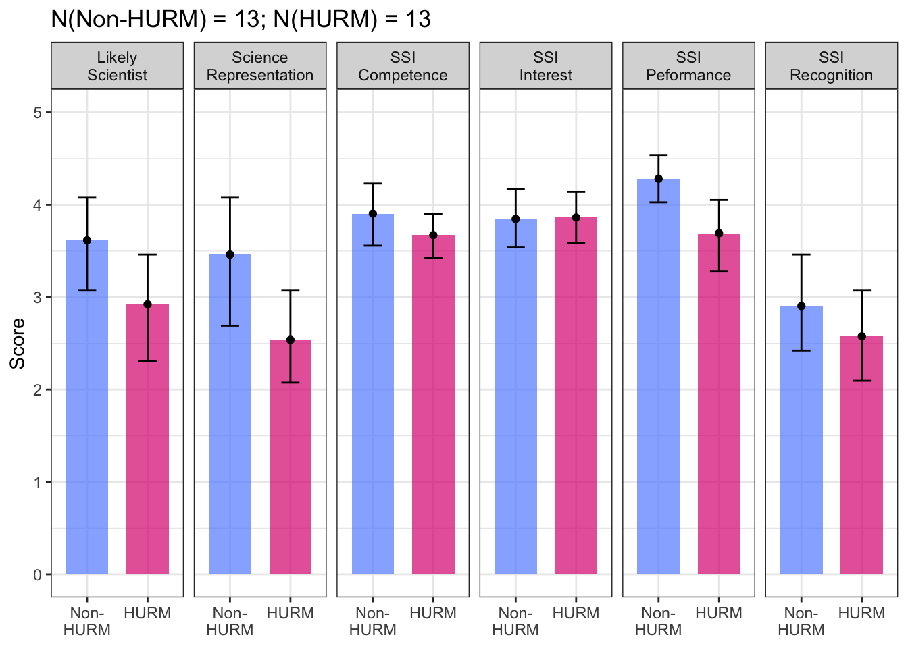
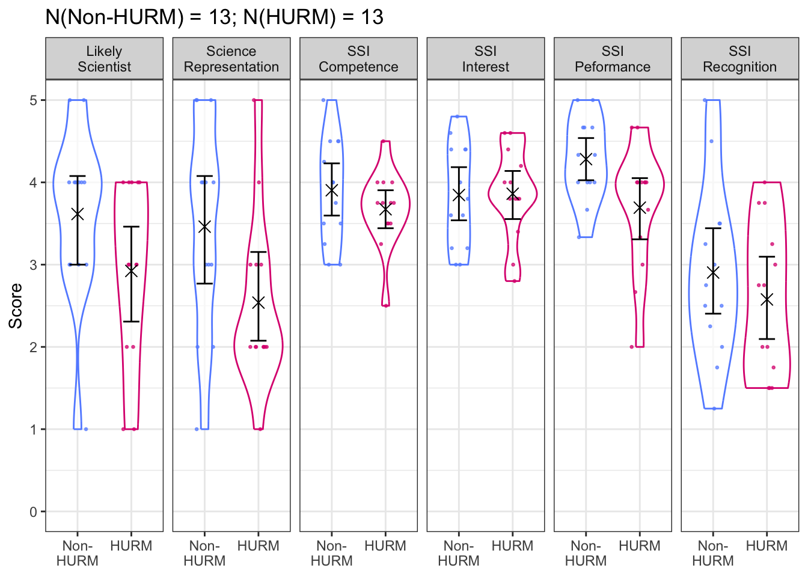
2.1.2 Students regardless of last year’s attendance
2.1.2.1 Aggregated
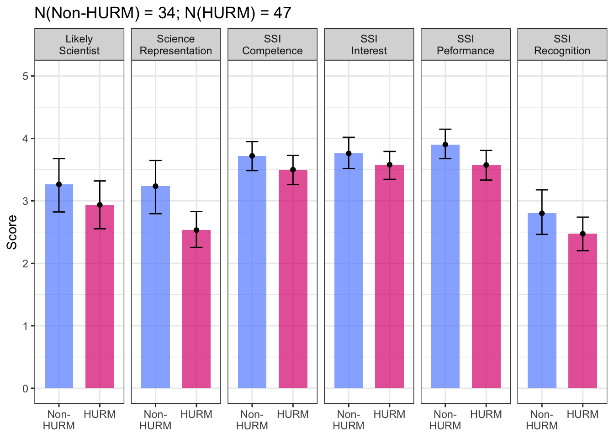
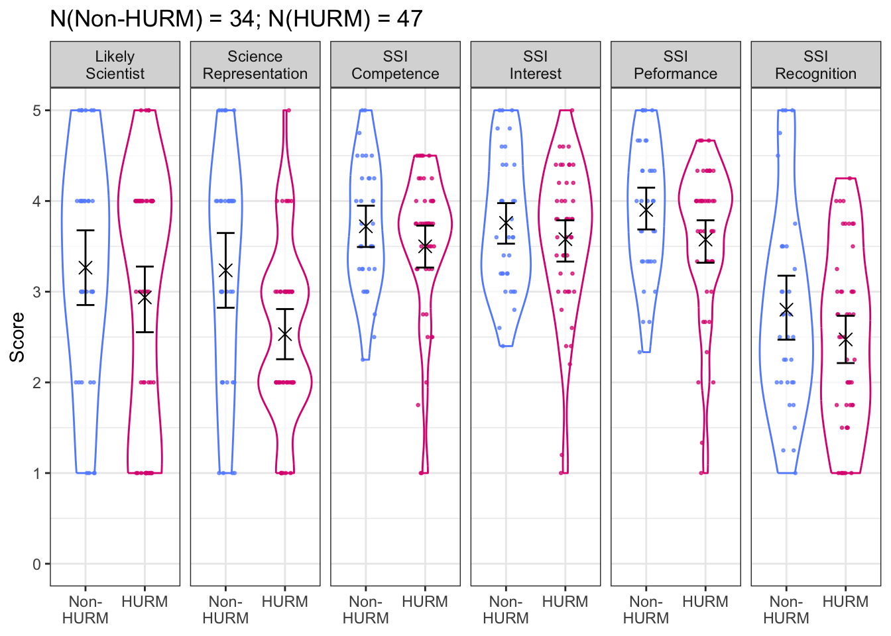
2.1.2.2 Split by last year’s attendance
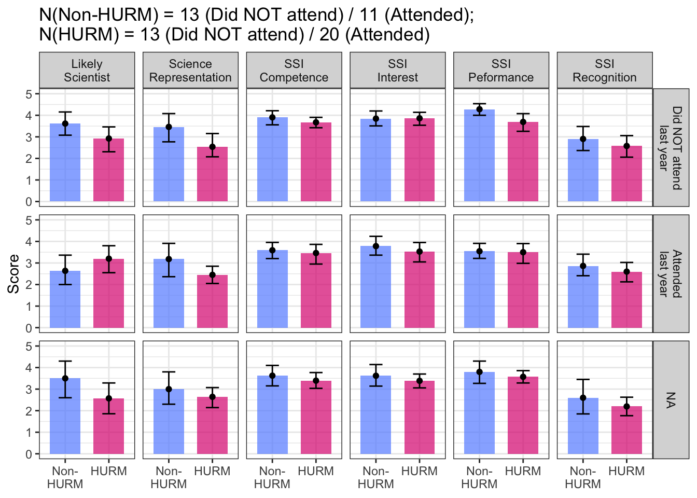
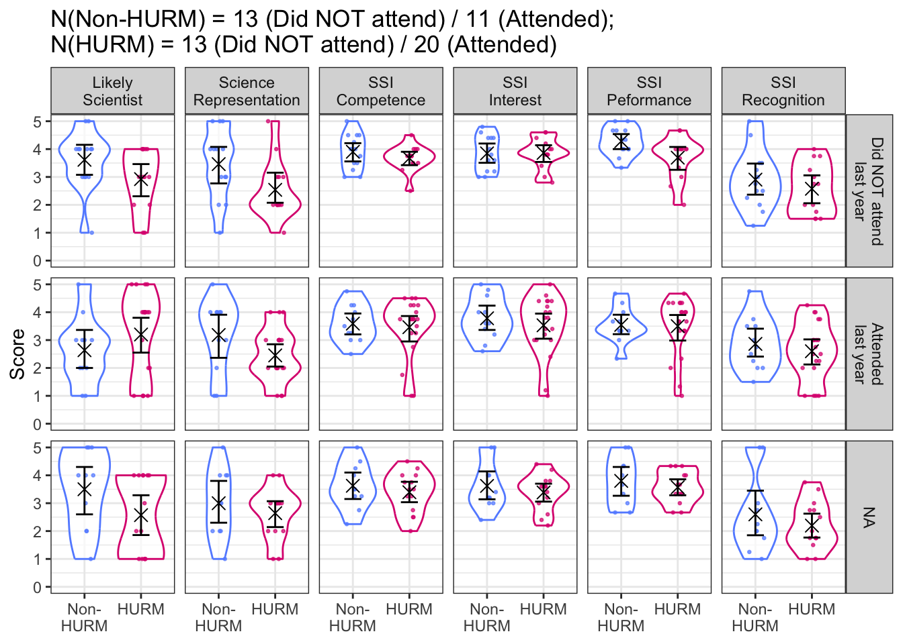
2.2 Prepost descriptives
2.2.1 Students who only attended this year
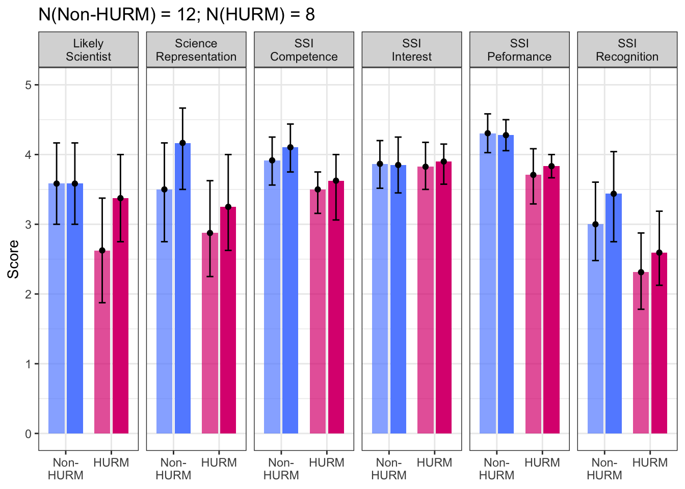
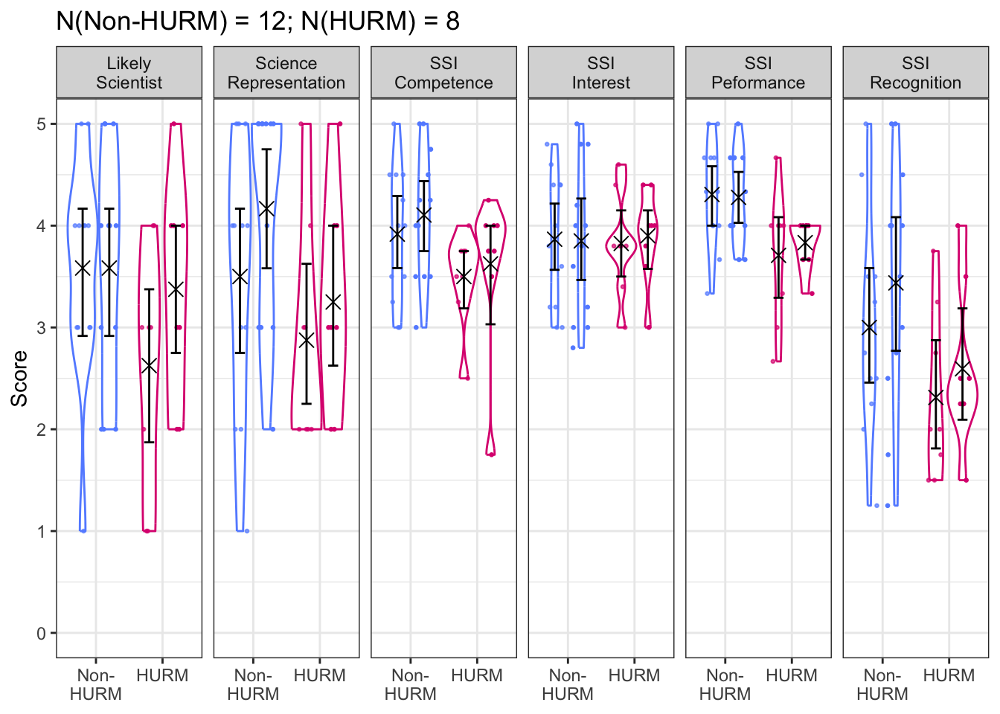
2.2.2 Students who attended this year, regardless of last year’s attendance
2.2.2.1 Aggregated
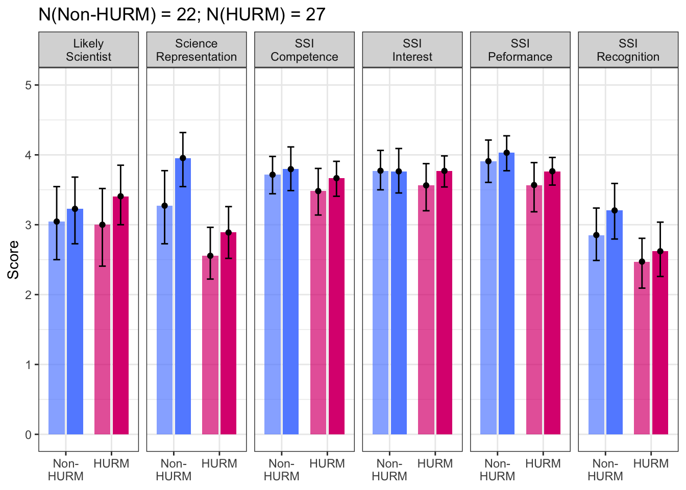
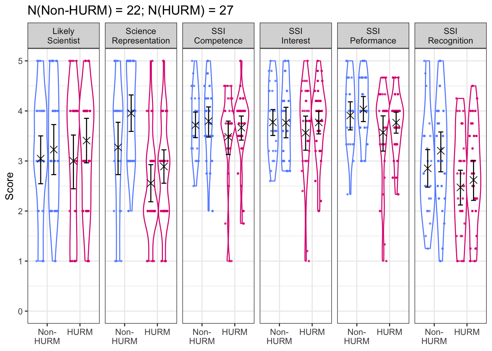
2.2.2.2 Split by last year’s attendance
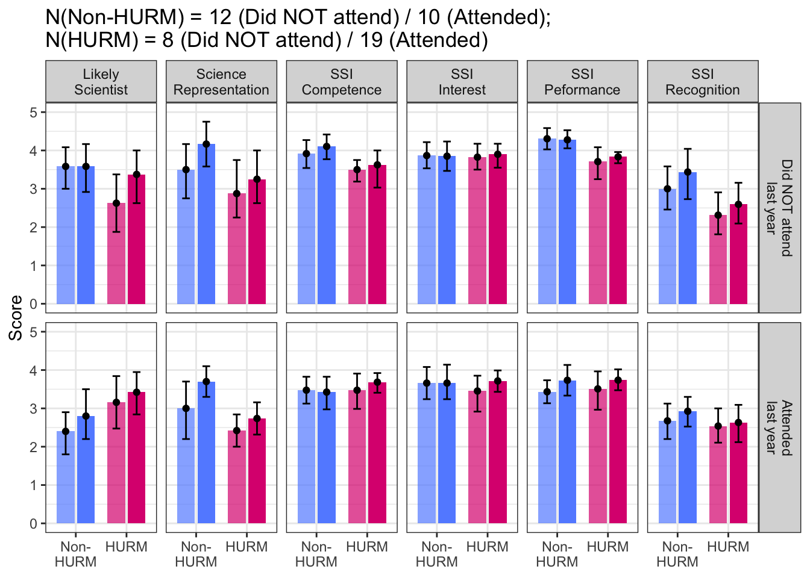
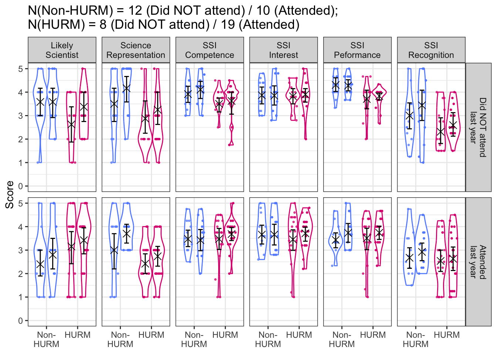
3 Analyses
3.1 Science Representation
First, let’s focus on Science Representation, the only measure that seems to show any difference between pre-test and post-test. We performed a Repeated-Measure ANOVA with Time (pre/post) as within-subject factor and Minority Status (HURM/Non-HURM) as between-subject factor on all subjects who attended the expo in 2025 (this year) regardless of attendance in 2024 (last year). We found a main effect of time (F(1, 55)=14.49, p<0.001, eta2=0.034) and Minority Status (F(1, 55)=14.49, p<0.001, eta2=0.193), while the interaction was not significant (F(1, 55)=2.82, p=0.01, eta2=0.007).
Post-hoc tests revealed that Science Representation was increased for the whole sample from pre-test to post-test (t(55) = 3.806, p < 0.001), with a medium effect size (Cohen’s d = 0.417, CI95 = [0.185; 0.649]). Science Representation was also higher for the Non-HURM sutdents compared to the HURM students (t(55) = 4.081, p < 0.001), with a very large effect size (Cohen’s d = 0.999, CI95 = [0.473; 1.526]), P-values are adjusted with Holm’s correction.
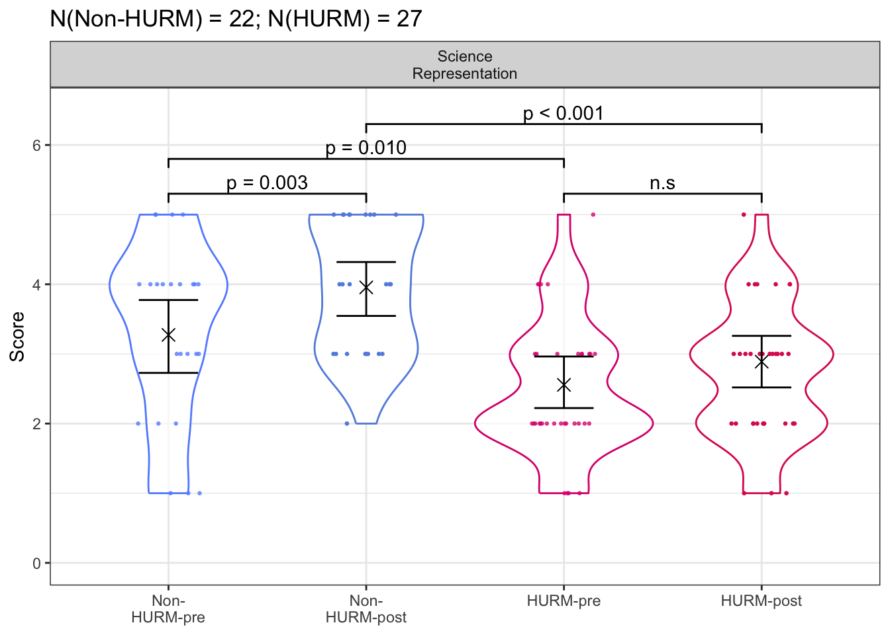
3.2 Can we use the 8 students who did not attend this year’s expo as a ctrl grp?
Ideally, to ensure that any effect observed on our DVs (and specifically Science Representation) is not due to any factor that may have naturally occurred during the 4 weeks between the pre-test and post-test survey (other than the Science Expo), we would compare the pre-post change in Science Representation between students that attended the expo and matched students who did not attend the expo. While we did not include such a group in our original design, eight (8) students in our sample completed the pre-test and post-test surveys but did not attend the expo.
Note that out of these 8 students, 2 are Non-HURM and 6 are HURM students. Because of this very low sample in the sample of participants who did not attend the expo this year, we do not split this analysis between Non-HURM and HRUM students. While the interaction is not significant (due to the very small size of the group of students who did not attend last year’s expo), numerically it seems that the group who did not attend this expo this year did not see any change in Science Representation compared to the group who did attend the expo this year.
We note that almost all students who did not attend the expo this year reported below average values in Science Representation, and thus it is possible that the reason why we do not see any difference between pre-test and post-test for this group is that they might either be not interested in research in the first place, and so their feeling of Science Representation possibly cannot be changed anyway.
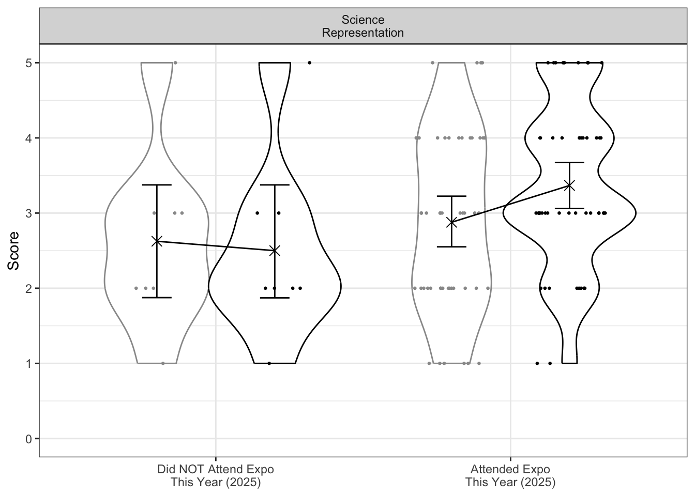
4 Open-Feedback Analyses
4.1 Feelings Change After Expo
Question : After attending the Science Expo, how has seeing yourself being represented, or not represented, in the scientific community influenced your perception or feelings about your own place in science?
Mixed results, quick look at the table seems to show about half of the students had their feelings changes and the other half not really. Overall, I would say enough students report being motivated by this expo to pursue their careers that it seems worth it.
| response | under_represented |
|---|---|
| I think seeing myself represented throughout the expo strengthened my passion for science. The career path i’ve been considering has had me worrying a bit about whether it is really something I’d be able to do but seeing each presenter talk about the specific science they’re interested in with such passion re-sparked my passion. | HURM |
| yes | HURM |
| I dont feel that influenced by it | HURM |
| Did not change, science has never been my thing although I do not mind learning about it. | HURM |
| It did not change any opinion of mine, there woman there which was great. | HURM |
| it didn’t really change my feelings | HURM |
| I mean, I don’t know that I saw any fellow trans or nonbinary people at the expo… I could’ve just missed them, but I had originally been excited at the prospect of them being there & was in fact disappointed. Also, I got misgendered by the people who were at the expo, which obviously felt ✨wonderful✨. | HURM |
| It made me feel more confident i could go into a science field and be passionate about it. | HURM |
| I talked to one person in particular, and he was in a very similar situation as I am when he was my age, so it was helpful to see how his story played out and where he ended up. It made me realize that I would also be able to work in science if I wish. | HURM |
| Did Not influence my feelings. | HURM |
| I saw a lot of my interests being showcased. | HURM |
| The science expo had many great stands filled with lots of interesting careers, I really loved the stand about sleep because that is the type of science I am interested in. I would rather study something more about the psychological effects of science rather than the stuff everyone does like animal testing and things of that sort. I did see my place in science when it came to the more psychological parts. | HURM |
| Similar to how I felt before. | HURM |
| after attending this years science expo i saw and learned a lot of stuff from sleep studies to measure brain waves to fun stuff like how science combines different chemicals making slime. It was a really fun experience and i got to see cool things like animal brains and test tools that they use which helped me imagine myself in that field or study. | HURM |
| It makes me feel great | HURM |
| Not sure that I seen myself being represented | HURM |
| Didn’t attend | HURM |
| I saw a more variety of topics being discussed. | HURM |
| i saw a little bit of representation and it didn’t affect any of my perception on my or place in science. | HURM |
| I saw people of color but not a ton, i think my feelings are the same though | HURM |
| It made me realize how many other fields of research use science | HURM |
| It makes me feel like there could be an opportunity for me in the science community, whether it be a career or an interest | HURM |
| It didn’t really influence my feelings. | HURM |
| I saw women and women of color passionate and knowledgeable about their field of study. It’s influenced me because I know that there are a lot of possibilities out there for me including many science fields. | HURM |
| I don’t see my self being represented with science | HURM |
| I saw myself being represented among the science community and it showed me how the possibility or chance for me | HURM |
| After attending the science expo, i saw myself represented in a few of the fields. It didn’t influence my perception of my own place in science because I already knew there are some people like me in scientific fields. | HURM |
| I saw myself being represented as a scientist. | Non-HURM |
| I saw myself represented by the scientific community and it has not really changed my perception because I had already seen myself represented. | Non-HURM |
| I felt seen by the scientific community especially when asking question, the people there were more interested in me and the professional career I want to persue. | Non-HURM |
| I talked to a guy (his stand was about fly brains) who was talking to us about how he didn’t think he was smart enough for science related medical major so he decided to go into nursing before then going into science. This resonated with me because he was able to figure things out and that makes me hopeful | Non-HURM |
| I feel way more invested in science careers in the future and I have learned more about different options. | Non-HURM |
| . | Non-HURM |
| I talked with some guy who had also planned on going into nursing and explained how it transitioned into him studying medical-related science even though he had always believed that he wasn’t smart enough for science, which really resonated with me. | Non-HURM |
| I feel like there were some projects that actually worked in investigating things that matter to us like teens and sleep and even though I will not be study any science related career that helped me see science from a different perspective as something useful | Non-HURM |
| It has not impacted my view of my own place in science. | Non-HURM |
| i feel the same | Non-HURM |
| I felt represented at the science expo however im more interested in biology and chemistry that goes with dentistry and would like to see that more represented. | Non-HURM |
| I see myself represented in many fields and at many of the stations in the science expo, it makes me feel intrigued and confident in science learning. | Non-HURM |
| I see people like me in the science field. | Non-HURM |
| I see lots of people like me doing science and lots of people not like me doing science it feels good | Non-HURM |
| :) | Non-HURM |
| I thought it was interesting seeing students interested in things I am interested in and they are making a actual career out of that too | Non-HURM |
| Very interesting and cool. | Non-HURM |
| I got to learn about different forms of science that I found interesting. | Non-HURM |
| No change | Non-HURM |
| It didn’t I don’t judge based off of if I see myself as important, I think that the science is more important than what I see as myself. | Non-HURM |
| I feel represented in the science community by women. | Non-HURM |
| Seeing myself represented at the Science Expo didn’t influence my perception or feelings regarding science in a positive or negative way. I feel mostly indifferent by things related to STEM. But it was cool seeing a bunch of women presenting various projects. | Non-HURM |
| There were a lot of diversity in people so I felt represented but a typical/stereotypical scientist doesn’t make me feel represented | NA |
| I found one table related to what I want to be so I find that very interesting | NA |
| It made me feel more confident in my choice of choosing a science related career | NA |
| I didnt see myself as a science person, but very interesting | NA |
| Im very invested in technical and scienific explanations of everyday life and how science really describes the processes in nature and ourselves but Im more focused on physical health and aerobic processes like physical training and kinestheology, so I wouldnt say im particularly represented since what I was looking for was very specific | NA |
| I don’t know | NA |
| I didn’t see representation, nor do I know how to gauge it if it was there. | NA |
| I like the different things they had and you could see all the different jobs with Science | NA |
| It was nice to see so many women in the science space and hearing them talk about their experiments/research. It was really nice to see some of the passion people have in their work. | NA |
| There were many women hostesses but not many of them were black, regardless of how many there were, though, I’d still have the same influence of pursuing science based on there being little and a lot of representation. | NA |
| NA | NA |
| It hasn’t influenced my perception or feelings about my own place in science. | NA |
| I think science is interesting. | NA |
| Since I’m interested in forensics and I did not seeing anything like that, seeing that it wasn’t represented makes me think that my interest in forensics is unique; it makes me want to do it more. | NA |
| I did see some people there that were of color, and lots of them were women, however none of them were black. | NA |
4.2 Most Valuable Aspects
Question : What aspects of the Science Expo did you find most valuable?
- Variety of booths,
- Interactivity
- Candies
| response | under_represented |
|---|---|
| I really enjoyed that each presentation was personal to each person there and they all didn’t seem like they just had to be there but they truly were passionate and wanted to share it with us students. | HURM |
| how they give us actual resources on how to join or apply | HURM |
| Interactive booths like the eyesight goggles and the sleep wheel | HURM |
| Seeing how science has an impact on everyone’s lives but completely different reasons | HURM |
| I just thought it was interesting and fun to see things. | HURM |
| i learned new information | HURM |
| I don’t know… I liked learning about random sciency-things, & the interactive activities are always an engaging way for me to do that. | HURM |
| Seeing careers i’m interested in | HURM |
| it was very interesting to be able to talk through specific careers, and see if I could imagine myself working in a similar job | HURM |
| learning about all the stands. | HURM |
| Human body anatomy being showcased. | HURM |
| I also really loved the stand where we made slime, it was very engaging and talked about how slime has to do with science. | HURM |
| I just enjoyed being able to talk to different people. | HURM |
| i liked the fact that each of the fields how their own special things that were not the same and they brought things we could look, see, and touch to spark our curiosity. | HURM |
| The study of the fruit fly brain. | HURM |
| The variety in topics. | HURM |
| i like how passionate the people were at their stations explaining to us what they do | HURM |
| Interacting with the presenters and doing the hands on models | HURM |
| Getting to talk to the students at uw | HURM |
| All of it | HURM |
| Tables with interactive activities made me the most interested in their subjects. | HURM |
| Getting to talk to people in the science field | HURM |
| i found the ability to talk with fun people and learn about what they do to be pretty fun. I liked the interactive stuff a lot, especially the sync your heart thing where we got to play with balls. | HURM |
| I saw people who changed their careers throughout their life to become a scientist, this enlightened my view on my possibilities as a scientist and other careers | Non-HURM |
| Getting to learn about people’s research. | Non-HURM |
| the variety of fields in science that were present that day. | Non-HURM |
| i found that guy who did the fly brains the most valuable to me | Non-HURM |
| The demonstrations and vet/medical school information. | Non-HURM |
| I think people getting to learn about science through hands-on experience was really valuable. | Non-HURM |
| Getting to know the interests of other people and how hard they work to help make people’s lives better. | Non-HURM |
| I found the interactive activities at the Science Expo the most valuable. | Non-HURM |
| i liked talking to the ppl | Non-HURM |
| the biology aspects (slime making) I am in AP biology and very interested in it. | Non-HURM |
| the interactive stations showing the results of research and creation | Non-HURM |
| I like talking to people about their careers in science and how they got to the place they are in. | Non-HURM |
| I liked asking questions and getting answers form experts | Non-HURM |
| :0 | Non-HURM |
| engaging with others | Non-HURM |
| It was fun. | Non-HURM |
| The openness of the presenters | Non-HURM |
| The information about various biological topics. | Non-HURM |
| The cool inventions and creations regarding experimental progress throughout some time being displayed to us. I appreciate the scientists who have taken a long period of time to experiment and were now able to present to us with all their work. | Non-HURM |
| I like the slime because it was very hands on | NA |
| Learning about different type sof science | NA |
| The medical side | NA |
| im not sure | NA |
| The information on UW programs | NA |
| The inclusivity | NA |
| The one with the slime it was cool seeing how it was made | NA |
| Seeing research related to medicine and the general benefits to society. | NA |
| Getting to talk to all of the different stands of science and careers. | NA |
| NA | NA |
| I found the amount of science subjects to be the most valuable. | NA |
| The throat research. | NA |
| The technology and the gadgets. They show what you could do if you joined their program. | NA |
4.3 What to Improve
Question : What aspects of the Expo would you improve and how?
Main themes : - More hands-on tables - More tables overall - More candy - A bunch of people said they liked it, and one of them even said they’d want more throughout the year :D - One comment about pronouns
| response | under_represented |
|---|---|
| The only thing I would improve is the amount of things there were, there wasn’t much so I revisited lots of the tables. | HURM |
| more candy | HURM |
| none | HURM |
| Not much! Maybe more stations. | HURM |
| more interactive stations maybe | HURM |
| More trans representation; also more awareness about not assuming students’ pronouns. | HURM |
| maybe the teachers got something like this, but it would’ve been nice to have a schedule of when each career would be in the expo during what periods, so we could think ahead about which ones in particular we wanted to talk to | HURM |
| more interactive science stands. | HURM |
| N/A everything was fine the way it was | HURM |
| I wouldn’t improve anything, everyone was very friendly and informative. | HURM |
| honestly nothing it was really fun this year. | HURM |
| I think the amount of time we get to explore should increase | HURM |
| probably more structure | HURM |
| I liked it all! | HURM |
| Maybe a smaller room or having the space organized into types of science | HURM |
| I would like to see more tables. | HURM |
| I would change the location | HURM |
| I would improve the way we leave, I never notice when my class leaves and end up being late | HURM |
| N/A | Non-HURM |
| More different research to hear about. | Non-HURM |
| I would do more editions of the expo, it was super interesting. | Non-HURM |
| more interactive stands | Non-HURM |
| Having more hands on demonstrations. | Non-HURM |
| I would add even more hands-on stuff and visuals because a lot of people have difficulty learning when they’re just getting talked at. | Non-HURM |
| None ;) | Non-HURM |
| I would put all of the tables closer together to make the Expo more inviting. | Non-HURM |
| it was kinda boring and awkward | Non-HURM |
| Having more science-related careers shown. | Non-HURM |
| the length of time we spend in there | Non-HURM |
| :( | Non-HURM |
| Some peoples presentations were not as good as others but also that is not all their fault. I think some things were a lot easier to make better than others but it was nice when you could tell that somebody put extra work into their presentation. | Non-HURM |
| None. | Non-HURM |
| None that I can think of. | Non-HURM |
| No opinion | Non-HURM |
| I’m not entirely sure but what made it overwhelming was the sheer amount of stations. I’m not asking anybody to reduce em but it seemed like a lot to me personally. | Non-HURM |
| To make it optional :D | Non-HURM |
| More fun and hands on activities | NA |
| I would try to add more physical aspects. | NA |
| more things to see | NA |
| Not much, it was very nice :] | NA |
| Nothing I liked it | NA |
| Some presenters only had their boards and didn’t explain. Don’t expect students to read your board and ask questions only. You need to explain your research and what it means. | NA |
| More racial diversity. | NA |
| More dinosaurs | NA |
| There isn’t anything I would improve. | NA |
| None | NA |
| I would improve making them more attractive to students. The stands are simple, and doesn’t make you want to really come up to them. | NA |
4.4 Other Comments
Question : Any other comments or reflections you want to share with the organizers?
| response | under_represented |
|---|---|
| no | HURM |
| nope | HURM |
| Nope! | HURM |
| no | HURM |
| n/a | HURM |
| N/A | HURM |
| Nope! Great job. | HURM |
| none. | HURM |
| N/a | HURM |
| no | HURM |
| No | HURM |
| No | HURM |
| The candies are great too, makes it more encouraging to learn about stuff. | HURM |
| N/A | Non-HURM |
| No, great job! ;) | Non-HURM |
| no | Non-HURM |
| no | Non-HURM |
| oo | Non-HURM |
| I love these science expos they honestly are the highlights of my days in my science classes. | Non-HURM |
| No. | Non-HURM |
| Nope. | Non-HURM |
| No | Non-HURM |
| No | Non-HURM |
| None currently | Non-HURM |
| Nope | NA |
| no | NA |
| Nope | NA |
| No it was cool tho | NA |
| nah | NA |
| There isn’t any. | NA |
| No | NA |
| No | NA |